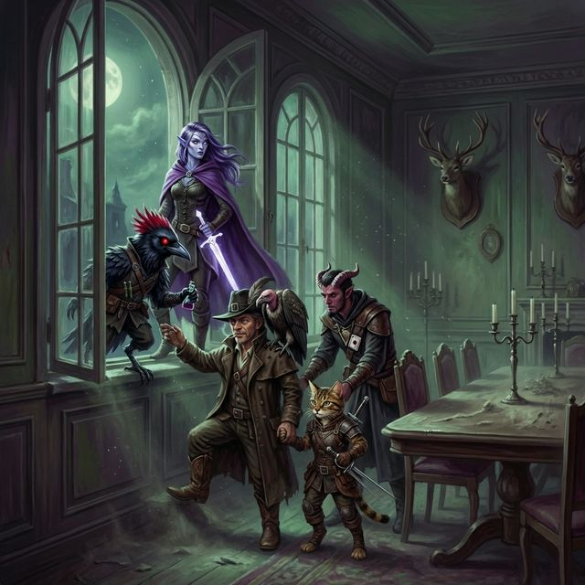
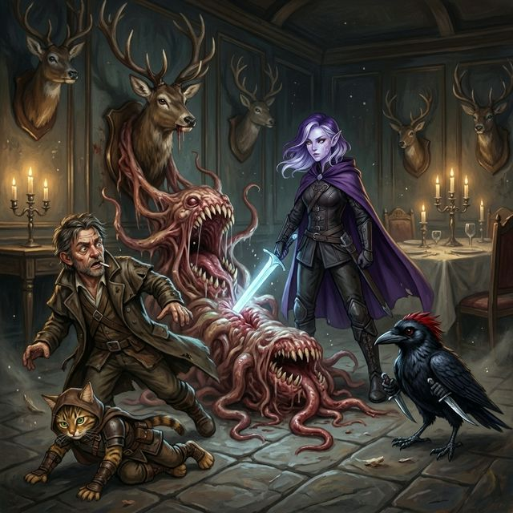
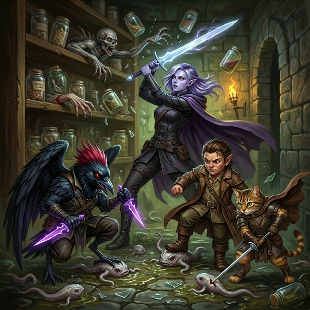
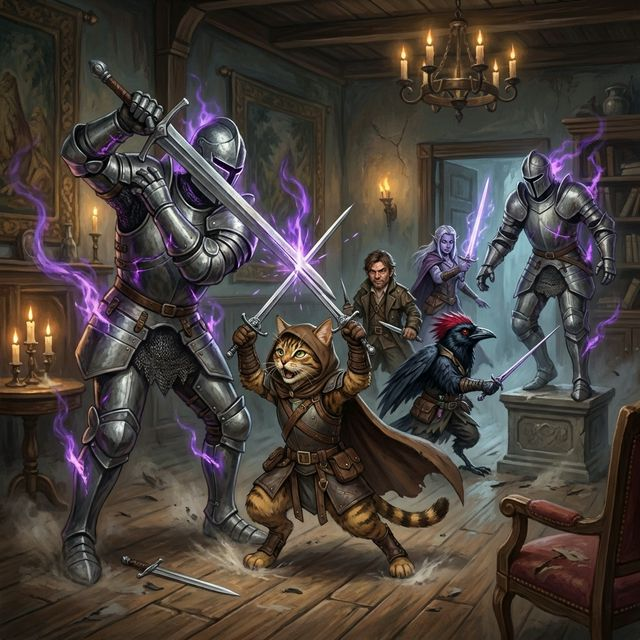
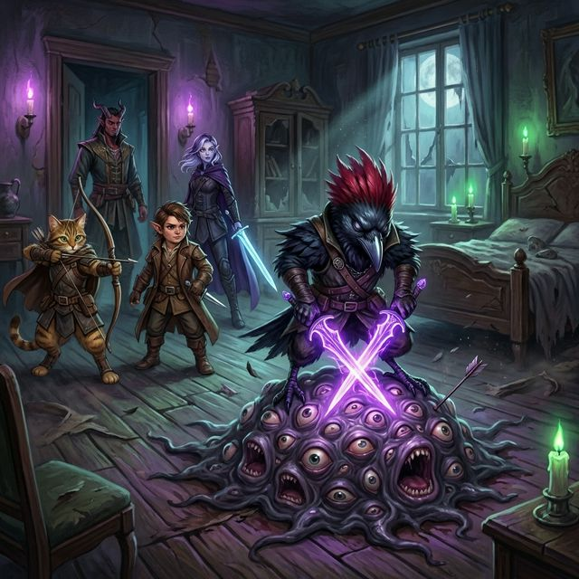
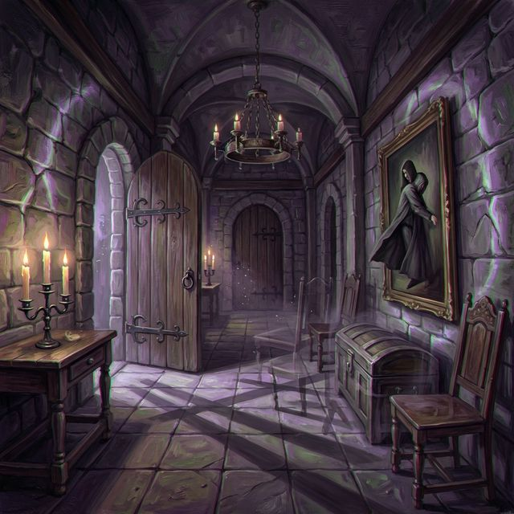
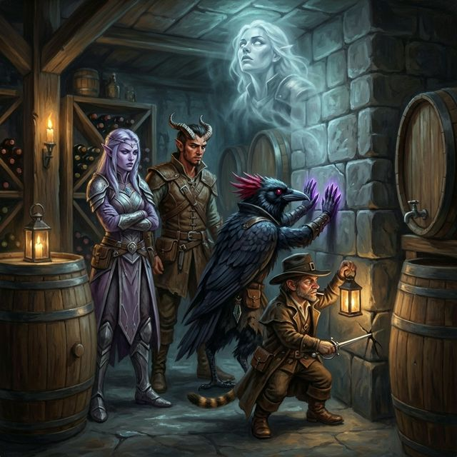

Session 5: Into Delphi Mansion
Date: February 21, 2026
Location: Delphi Mansion — Ground Floor & Wine Cellar
Adventure: Reach for the Stars — The Mansion (Keys From The Golden Vault)
Previously...
The party camped on a bluff overlooking Delphi Mansion with Elra Lionheart's ghost, a hand-drawn mansion map, and three cultist notes. The windows can be unlocked with the password “Krokulmar.” Four Golden Vault operatives went in before them and never came out. The mansion is waiting.
Act 1: Breaking In
The party bypassed the front door entirely — entering through the dining room windows using the password. Blood Feather went first, scouting the dark room. Dusty candelabras. A grand table untouched for months. Mounted deer heads on the walls, watching with glass eyes.
One of them wasn't a deer.

The Mimic
Slim noticed something wrong with the south wall — scratches around a mounted deer head plaque. He found the secret door mechanism and triggered it.
The deer head opened its mouth. Not like a deer. Like a drawer. The antlers split into grasping, fleshy tendrils and the wooden plaque liquefied into a tongue of adhesive meat — and missed. Slim stumbled backward, cigarette still burning, eyes wide.
Kiara charged forward with both rapiers drawn — and rolled a natural 1. She went face-first across the flagstones. Not unconscious. Just embarrassed.
After a comedy of missed attacks from the entire party, Freya drove her Moon-Touched Sword through the mimic's center mass. It deflated on the floor like a wet leather sack.

The Specimen Room
Behind the dead mimic: a hidden room. Floor-to-ceiling shelves lined with glass specimen jars. Six contained something moving — pale, slug-like shapes pressing against the glass with blind, questing mouths.
Two crawling claws skittered out from the top shelf and started pushing jars. Pop. Shatter. Two tadpoles hit the floor already moving — writhng toward the nearest pair of boots.
- Freya killed both claws before they could push more jars — Moon-Touched Sword shearing across the shelf
- Kiara severely damaged the first tadpole
- Slim finished it off
- Blood Feather killed the last one
Four jars remained unbroken. Blood Feather carefully collected all four sealed specimen jars and placed them in the Bag of Holding. Live slaad tadpoles — biological weapons for later.

The Animated Armor
The party made their way through the foyer to the parlor. Slim walked within range of two suits of armor flanking the entrance — and they stepped off their pedestals. No creak. No warning. Just a deliberate step, like a coffin lid sliding shut.
The first suit swung at Kiara — a cleaving overhead strike that should have split a creature her size in half. But the tabaxi was already moving. Both rapiers crossed overhead in an X-block parry, catching the greatsword. The force drove her boots six inches back across the stone — but she was standing. Not a scratch.
Kiara killed the first armor. The second suit hit Blood Feather, who fought with his rapier — psychic blades are useless against animated armor. Freya killed the second with her Moon-Touched Sword, the pale glow fraying the enchantment like steam from a wound.
No spells cast. No surges triggered. The party fought smart — all martial.

The Gibbering Mouther
The eastern bedroom door opened and Elra's warning became flesh. A mound of rippling meat on the floor, covered in asynchronously blinking eyes and lipless mouths babbling in overlapping voices. One of them saying your name.
“Puddles of eyes and mouths. If you hear that sound, don't freeze.” — Elra's warning from Session 4
Kiara opened with a natural 20 longbow shot — the arrow punched clean through the mass. Blood Feather summoned his psychic blades — the mouther is not psychic immune. Slim flanked for advantage.
The mouther retaliated with blinding spittle — hitting Blood Feather in the face. Caustic milky fluid sealed his eyes shut.
It didn't matter.
Blood Feather listened. Every mouth was a beacon. Every gibber was a target. He brought both psychic blades together from opposite sides in a scissor-strike — 12 psychic damage. The blades met in the center of the mass. The gibbering stopped. Not fading. Just off. Like pulling a plug. Every mouth closed at once. Every eye dimmed.
Blood Feather stood over it. Blind. Blades still burning. Not a word.

The First Eldritch Surge
Opening a door triggered Surge 3: Illusory Displacement. The room hiccupped. Everything shifted three inches from where it should be. Candle flames hovered above their wicks. Doorframes didn't align with doors. Shadows fell in impossible directions.
“Listen to me. All of you. What just happened — the room shifting — that's NOT random. That's not a trap someone built. That's the HOUSE. The thing inside the house.”
“Every room you walk into, it KNOWS. It pushes reality sideways — just enough to make you doubt your own eyes. Just enough to make your sword miss.”
“This is how it killed us. Not all at once. One wrong step at a time. One room at a time. Every door we opened, the mansion pushed back a little harder.”
“There has to be a source. Something anchoring this... wrongness. If you can find it and destroy it, maybe the house goes back to being just a house.”

Elra's Story
Elra told the party what happened to her team. Four operatives entered the mansion. They went up.
“We went up. Don't make our mistake.”
“Gareth died to the puddle of mouths — the thing you just killed. It ate his shield arm at the elbow.”
“Jareth and Senna — brother and sister, best blades I've ever worked with — died to the thing with hooks for hands. Third floor.”
“There's a kitchen on the ground floor — probably a pantry, a cellar, something servants used. That's where I'd look. Rich men don't dig tunnels through their parlors. They dig them through their wine cellars.”
“Go down. Find the source. Break it.”
Slim remarked that would have been good information to have earlier.
The Wine Cellar — Locked
The party followed Elra's directions to the kitchen, through the pantry, and down to the wine cellar. They found the fourth cask — empty, positioned over a secret door.
The door wouldn't budge. Arcane lock. Nobody in the party had the strength to force it. They needed the right word.
“It won't budge. There's magic holding it — arcane lock, same as the windows. You need the right word.”
“The butler. Third floor. If anyone in this house knew the word to open a servant's passage... it would be the man who ran the household.”
“The thing with hooks — it was wearing a butler's uniform. And there was something around its neck. A locket. Gold chain. It glowed when Senna grabbed for it.”

Session End: Short Rest
The party took a short rest in the wine cellar — sharpening blades, checking arrows, not talking much. Elra kept watch. “Not like I need the sleep.”
Above them: the third floor. The butler. The thing with hooks for hands, wearing a locket that glows. The answer to the locked door is up there somewhere — and so is the creature that killed Elra's team.
Session Outcomes
Encounters
| Mimic (D3) | Killed by Freya — whiffed its attack entirely |
| Crawling Claws + Tadpoles | 2 claws killed, 2 tadpoles killed, 4 jars collected |
| Animated Armor ×2 (D6) | Kiara killed 1st (Parry!), Freya killed 2nd |
| Gibbering Mouther (D9) | Blood Feather — blind kill, dual psychic blades |
Loot
| Gold (clean) | 150 gp |
| Potions of Healing | ×3 |
| Slaad Tadpole Jars (sealed) | ×4 (in Bag of Holding) |
Session Stats
| Combats | 4 |
| Eldritch Surges | 1 (Surge 3: Illusory Displacement) |
| Deaths | 0 |
| Spells Cast in Combat | 0 — the party went full martial |
| MVPs | Kiara (Parry, nat 20) · Blood Feather (blind kill) |
“Last time I went up there, I didn't come back down.”
— Elra Lionheart